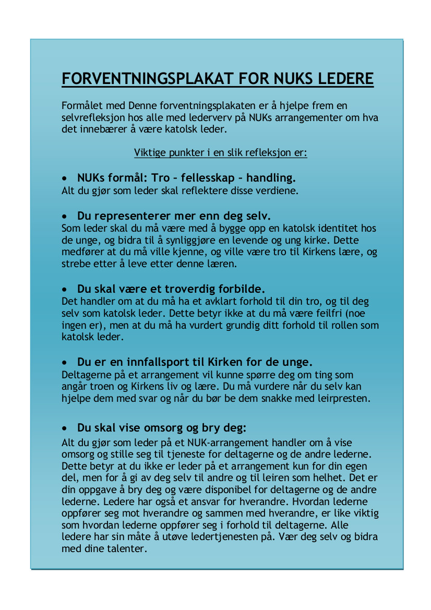

Håndbøker for leir
Disse håndbøkene er laget for å samle praktiske opplysninger og erfaringer i forbindelse med NUKs leirarrangementer. Håpet er at det vil gjøre leirene enda bedre, og at frivillige kan spare tid, krefter og penger under forberelsen, avviklingene og etterarbeidet av leirene.
Leirhåndbok
Et dokument til hjelp for planlegging og gjennomføring av en vellykket leir!
Håndboken revideres hvert år, derfor ber vi om at frivillige gir tilbakemeldinger på Leirhåndboken. Tilbakemeldinger kan sendes til lut@nuk.no.
Innhold
- Innledning
- Leder på leir
- Roller og ansvar
- Ulike leire, ulike aldersgrupper
- Regler på leir
- Lederteam
- Planleggningshelg
- Deltakerbrev
- Økonomi
- Ledermøter
- Praktisk leder
- Liturgi på leir
- Program på leir
- Mat og kokkekunst
- Førstehjelp
Vedlegg til leirhåndboka
Med leirhåndboken følger det en rekke vedlegg som skal hjelpe å komme i gang som leirsjef.
Klikk på et vedlegg for å laste det ned
- Deltagerbrev I - Sommerleir(.doc)
- Deltagerbrev II - Påskeleir (.doc)
- Deltagerbrev II - Svarskjema (.doc)
- Deltagerbrev II - Egenerklæring (.doc)
- Regnskapsmal I (.xls)
- Regnskapsmal II (.xls)
- Mal til leirrapport (.doc)
- Tidsplan for kontaktperson i LUT (.doc)
- Angelus (.doc)
- Ansvarsfordeling (.doc)
- Program for plaleggingshelg (.doc)
- Ukesmeny (.doc)
- Kort ukesprogram - Mal (.doc)
- Kort ukesprogram - Eksempel (.doc)
- Dagsprogram - Mal (.doc)
- Detaljert ukesprogram - Eksempel (.doc)
- Ideer til leker, aktiviteter og tema (.doc)
Forventningsplakat for ledere
Er du eller skal du bli leder? Lurer du på hva det innebærer å være en katolsk leder? Bruk forventningsplakaten som hjelp til å få frem en selvrefleksjon om hva det innebærer å være en katolsk leder.
Klikk her for å laste ned forventningsplakaten.Ministranthåndbok
Tips til deg som vil starte ministrantlag.
Utdrag av innholdsfortegnelsen
- Del 1: Velkommen som ministrant
- Del 2: Praktiske råd for ministranter
- Del 3: Forberedelse til messen
- Del 4: Messens gang
- Del 5: Ord og uttrykk som brukes i kirken
- Del 6: Kirkeåret
- Del 7: Tips til deg som vil starte ministrantlag